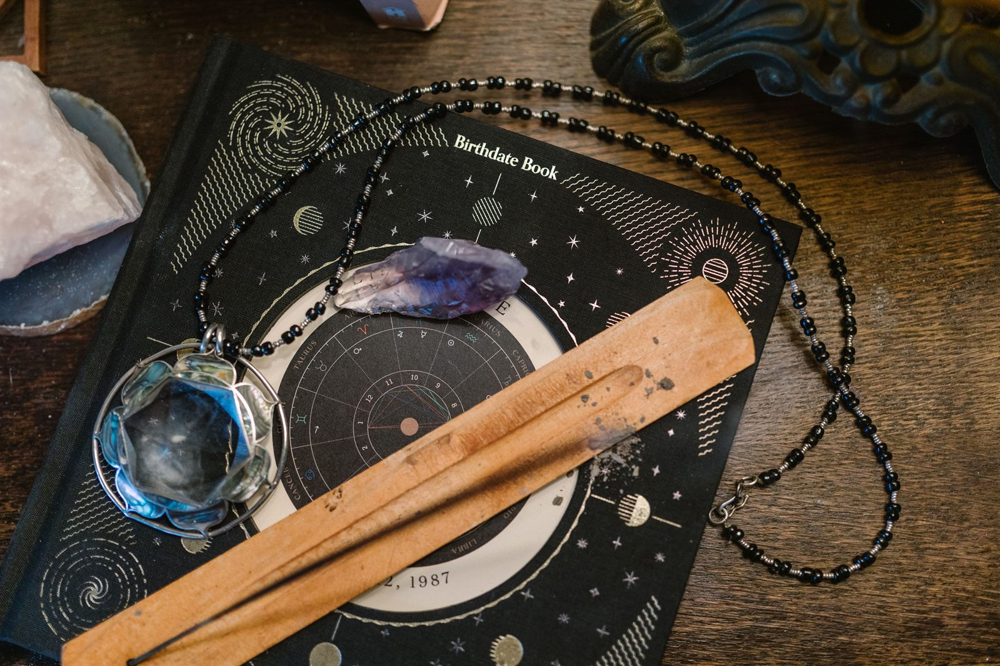

If you have ever waited for a Full Moon to charge your crystals or cast a manifestation spell, you are already practicing astrological magic. For modern witches and magical practitioners, astrology isn’t just about reading a birth chart to figure out why you are stubborn or emotional. It is a highly practical tool used to time spells, align intentions, and tap into specific energetic “weather” of the cosmos.
Planetary Magic: Borrowing the Energy of the Gods
- Venus (Love and Beauty): Spells for romance, self-love, and friendship are often performed on Fridays (Venus’ day) or when Venus is strongly placed in the sky. Practitioners might incorporate corresponding tools like copper, rose quartz, and apple blossoms.
- Mars (Action and Protection): Need to banish negative energy, set a strict boundary, or find the courage to make a big move? Mars rules Tuesday. Spells worked under Mars’ influence are fast, fiery and protective.
- Mercury (Communication and Intellect): Wednesday belongs to Mercury. This is the ideal time for rituals related to passing exams, signing contracts, or cleaning up stubborn miscommunications.
- Jupiter (Luck and Expansion): Jupiter is the cosmic Santa Claus. Thursday rituals focused on wealth, abundance and career growth tap into Jupiter’s expansive energy to supercharge the results.
The Witch’s Calendar: Moon Phases and the Zodiac
The Moon acts as a giant cosmic magnifying glass, and tracking its phases is Astrology 101 for most practitioners. The waxing moon (growing fuller) is used for “drawing in” spells like attracting money or new love. The waning moon (getting smaller) is reserved for “pushing away” spells, like breaking bad habits or banishing toxic situations. The Dark Moon is typically a time for deep rest, shadow work, and divination.
But it goes a step further: the zodiac sign the Moon is currently traveling through gives the spell its specific flavor. For instance, a Full Moon in earthy Taurus is perfect for money spells and grounding work, while a Full Moon in watery Scorpio is ideal for deep emotional healing, ancestral work, or intense transformation.
Electional Magic: Timing is Everything
Advanced practitioners use a technique called electional astrology. Instead of just looking at the Moon, they look at the entire sky to pick the perfect, mathematically precise moment to launch a business, cast a major spell, or create a planetary talisman. It is essentially cosmic wave-riding: instead of paddling against the current, you wait for the universe to push you exactly where you want to go.
Sources
- Thrice Round: “Astrology 101: How the Stars Influence Our Magick”
- College of Psychic Studies: “Unlocking the Power of Planetary Magick”
Disclaimer: This guide is intended for cosmic inspiration and entertainment, rather than a professional or scholarly review.